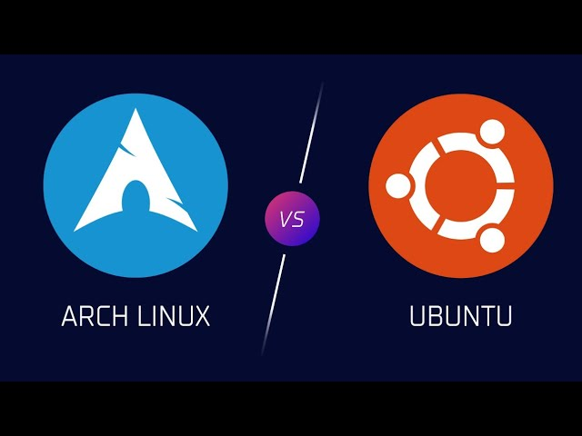

Arch Linux: la migliore distribuzione Linux!
Che cosa è arch linux?
Arch Linux è una distribuzione Linux leggera e flessibile che punta a semplificare le cose.

Meglio arch or ubuntu?
Ubuntu è una distribuzione basata su Debian, facile da usare e con rilasci semestrali. Arch è indipendente, minimale, rolling-release e ideale per utenti esperti. La community di Ubuntu è vasta e passiva, mentre quella di Arch è più piccola ma attiva.
Caratteristiche di Arch Linux
 Indipendente: Non basata su altre distribuzioni, sviluppata da zero.
Indipendente: Non basata su altre distribuzioni, sviluppata da zero. Rolling Release: Aggiornamenti continui senza necessità di reinstallazione.
Rolling Release: Aggiornamenti continui senza necessità di reinstallazione. Minimale: Installazione base essenziale, lascia all'utente la configurazione del sistema.
Minimale: Installazione base essenziale, lascia all'utente la configurazione del sistema. Pacman: Gestore pacchetti veloce ed efficiente per installare, aggiornare e rimuovere software.
Pacman: Gestore pacchetti veloce ed efficiente per installare, aggiornare e rimuovere software. AUR (Arch User Repository): Grande raccolta di pacchetti gestiti dalla community.
AUR (Arch User Repository): Grande raccolta di pacchetti gestiti dalla community. ABS (Arch Build System): Sistema per compilare pacchetti dai sorgenti.
ABS (Arch Build System): Sistema per compilare pacchetti dai sorgenti. Community attiva: Piccola ma molto coinvolta nello sviluppo e nel supporto.
Community attiva: Piccola ma molto coinvolta nello sviluppo e nel supporto. Filosofia KISS (Keep It Simple, Stupid): Design semplice e pulito per un maggiore controllo da parte dell'utente.
Filosofia KISS (Keep It Simple, Stupid): Design semplice e pulito per un maggiore controllo da parte dell'utente.